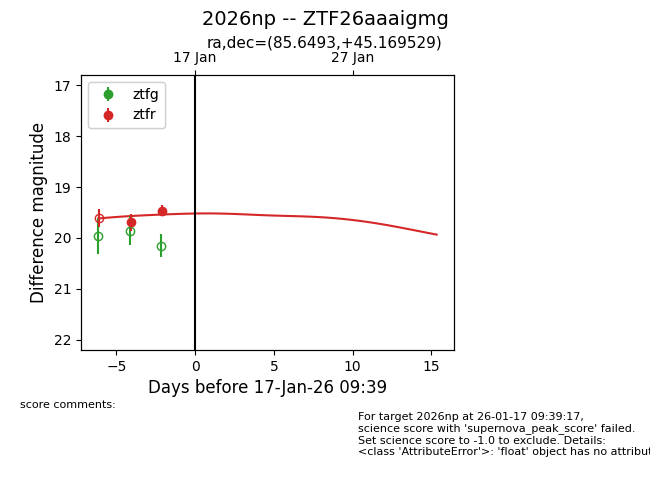
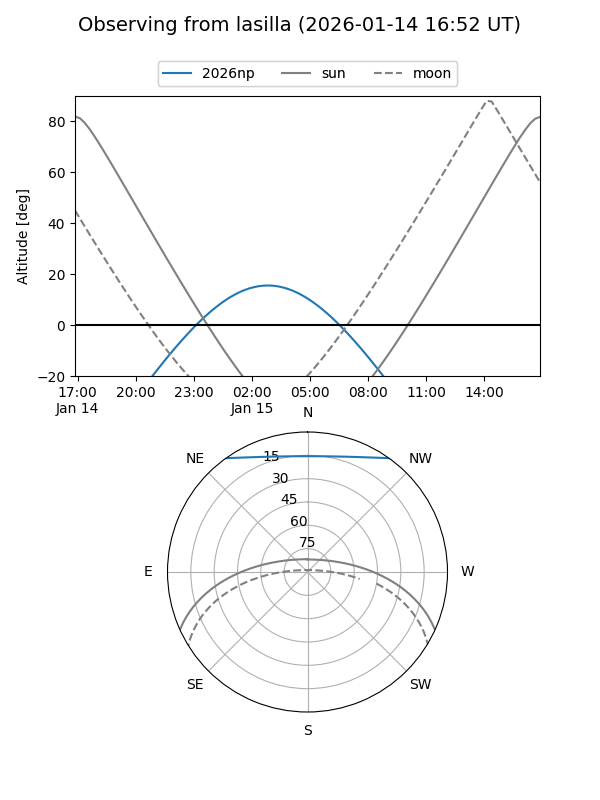
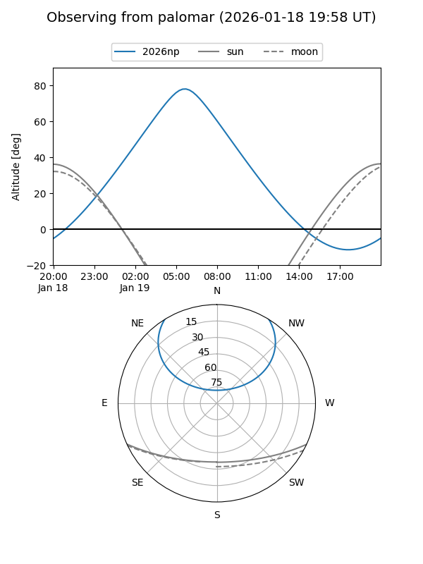
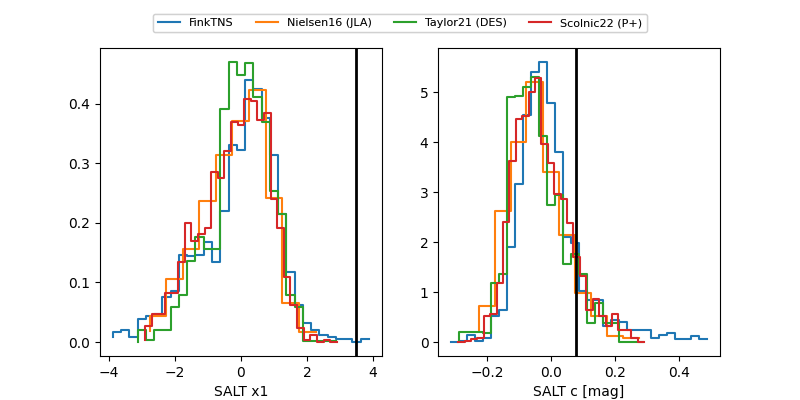

2026np
Target 2026np at 2026-01-19 04:45
Aliases and brokers:
FINK: link
Lasair: link
ALeRCE: link
TNS: link
YSE: link
alt names
ZTF26aaaigmg (ztf,fink_ztf)
2026np (tns,yse)
Coordinates:
equatorial (ra, dec) = 85.6493,+45.16953
equatorial (HMS+DMS) = 05:42:35.84,+45:10:10.31
galactic (l, b) = (165.7697,+7.91670)
Flags:
Photometry:
last ztfr=19.47
3 ztfr detections
Lightcurve

Visibility


Additional plots
